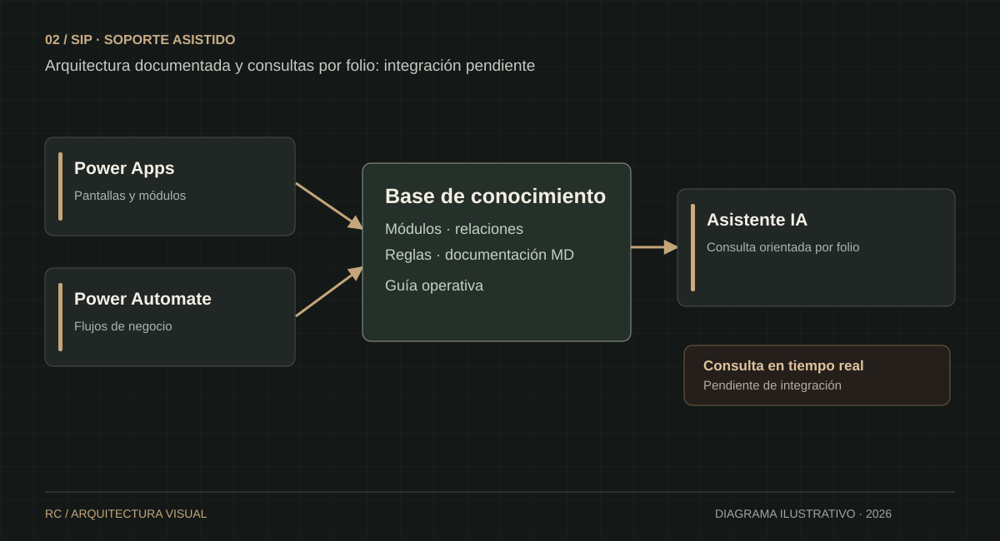
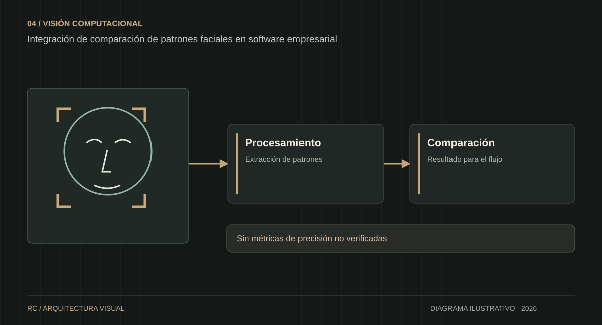

Mérida, México · Abierto a oportunidades profesionales
La tecnología debe resolver problemas reales.
Soy Rodrigo Israel Chin López. Diseño soluciones de automatización, integro capacidades de inteligencia artificial y coordino proyectos tecnológicos que conectan las necesidades del negocio con su ejecución técnica.
Cada caso muestra el reto, la intervención y el estado real del proyecto. Los proyectos internos se presentan sin información confidencial ni capturas de sistemas privados.
VISUALIZACIÓN CONCEPTUAL · SIN DATOS REALES
01 · Grupo Rocasa / AT&TImplementado
Automatización integral de Recursos Humanos
Digitalización de reclutamiento, seguimiento de aspirantes, validaciones y reportes administrativos. Coordinación directa de dos desarrolladores, levantamiento de requerimientos, priorización y reporte a gerencia.
AutomatizaciónLiderazgoProcesos RH
Explorar el caso +
Reto: disminuir tareas manuales y mejorar la trazabilidad del proceso de contratación.
Solución: sistema de gestión de aspirantes, etapas de reclutamiento, reglas de negocio y exportaciones operativas.
Impacto reportado: 80 % menos errores operativos y 40 % de mejora en tiempos de contratación.
Las cifras provienen del CV original y están pendientes de validación documental.

VISUALIZACIÓN CONCEPTUAL · SIN DATOS REALES
02 · Grupo OrveDiseño / documentación
SIP: soporte asistido por inteligencia artificial
Análisis de Power Apps, Power Automate y relaciones de datos para preservar conocimiento operativo y preparar un esquema de consulta y diagnóstico asistido por IA.
IA generativaPower AutomateMarkdown
Explorar el caso +
Reto: mantener la capacidad de soporte de un sistema sin continuar ampliándolo.
Solución: documentación técnica estructurada, infografía de relaciones y guía para consultas de incidencias por folio.
Estado: documentación realizada; integración productiva y consulta de datos en tiempo real pendientes de configurar y validar.
VISUALIZACIÓN CONCEPTUAL · SIN DATOS REALES
03 · Grupo OrveDesarrollo por fases
Orve GO: operaciones y aprobaciones
Arquitectura de plataforma móvil/web para solicitudes internas, cadenas de aprobación configurables, permisos heredados del CRM y servicios backend independientes.
Ruby on RailsPostgreSQLWorkflows
Explorar el caso +
Reto: estandarizar solicitudes y autorizaciones entre distintas áreas.
Solución: modelado de estados, pasos de aprobación, roles y permisos; módulos previstos de compras, viáticos, pagos, prenómina y capital humano.
Estado: desarrollo por fases; no se presenta el conjunto de módulos como totalmente liberado.

VISUALIZACIÓN CONCEPTUAL · SIN DATOS REALES
04 · Grupo Rocasa / AT&TImplementación reportada
Validación facial con IA
Integración de un módulo de comparación de patrones faciales con TensorFlow dentro de un flujo empresarial de validación de usuarios.
TensorFlowVisión computacionalIntegración
Explorar el caso +
Reto: incorporar controles tecnológicos de validación de identidad.
Solución: módulo de similitud facial integrado en software de negocio.
Alcance: experiencia de integración de IA; no se atribuyen métricas de precisión no verificadas.
02 / Liderazgo e impacto
De los requerimientos a la entrega.
En Grupo Rocasa coordiné un equipo de dos desarrolladores: levantamiento de requerimientos, definición de alcance, distribución de tareas, priorización, seguimiento y comunicación directa con gerencia.
2Desarrolladores bajo coordinación directa
80 %Reducción de errores operativos reportada en proyecto RH*
40 %Mejora reportada en tiempos de contratación*
*Resultados indicados en el CV original, sujetos a validación documental.
03 / Forma de trabajo
Un enfoque orientado a resultados.
01 / DESCUBRIR
Entender el proceso
Levantamiento de requerimientos, actores, reglas y puntos de fricción.
02 / DISEÑAR
Definir la solución
Arquitectura, automatizaciones, roles, permisos y prioridades.
03 / IMPLEMENTAR
Construir e integrar
Desarrollo, coordinación técnica, pruebas e integración de servicios.
04 / EVOLUCIONAR
Medir y mejorar
Seguimiento, documentación, soporte y mejoras continuas.
04 / Capacidades
Herramientas para ejecutar.
IA generativa aplicadaTensorFlowOCR / ML KitPower Apps (análisis)Power Automate (análisis)Ruby on RailsPostgreSQLReact NativeLaravel / PHPAPIs RESTGestión de requerimientosCoordinación de equipos
05 / Contacto
¿Hablamos de tu siguiente reto tecnológico?
Disponible para conversar sobre liderazgo técnico, automatización de procesos e implementación responsable de inteligencia artificial en entornos empresariales.